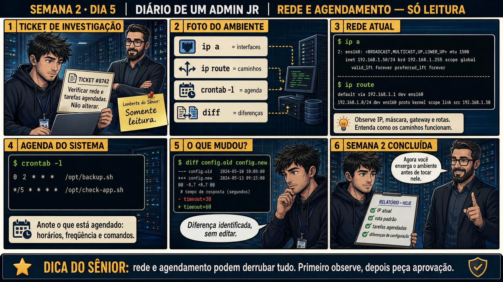

DIARIO DE UM ADMIN JR. | FASE 1 — LINUX, DO BÁSICO AO AVANÇADO
🧠 Antes de começar — 20 segundos de memória (Dia 4)
1. Ontem, antes de qualquer rm, qual era o primeiro passo do ritual, sempre? 2. Por que fazer backup antes de apagar, mesmo quando a pasta "parece" só cache descartável?
1.pwd — confirmar onde você está, antes de qualquer comando destrutivo. Hoje esse mesmo reflexo de "confirmar antes" reaparece, só que aplicado à rede e ao agendamento: você vai ler o ambiente antes de qualquer ideia de mexer nele. 2. Porque rm não tem lixeira e "parece descartável" é suposição, não confirmação — o custo do backup é sempre menor que o custo de um erro sem cópia nenhuma.
🔗 Conecta com a semana inteira: systemctl supervisionado, permissões, busca em
escala, remoção com ritual — cada dia te deu uma ferramenta de mudança real. Hoje não muda mais nada: é uma
primeira olhada em dois territórios novos, rede e agendamento, só pra reconhecer o terreno antes de pisar nele.
🔓 Privilégio de hoje: olhar rede e agendamento, sem mexer em nada ainda. Você
ganha acesso de leitura a configuração de rede e tarefas agendadas — mexer nisso é conteúdo de semanas futuras,
quando você já souber exatamente o que está vendo.
Semana 2 · Dia 5 | Nível Júnior
Rede e Agendamento — Só Leitura
ip a, ip route, crontab -l, diff: reconhecer o ambiente antes de qualquer alteração futura
ANTES DE ALTERAR, OBSERVE. DEPOIS DE ALTERAR, VALIDE.

1. O chamado
#8742PRIORIDADE BAIXA09:00aberto por: sênior
host: srv-app-03 · serviço: auditoria de rotina — rede e agendamento
"Verificar rede e tarefas agendadas antes de qualquer mudança futura ser planejada."
O sênior deixa um bilhete colado na tela: "lembrete: somente leitura". Por onde você começa?
💡 Passa o mouse nas palavras destacadas pra ver uma dica rápida — clica se quiser a explicação completa com analogia.
2. O sênior te conta
🧑🏫 antes dos termos técnicos, a história de hoje
Hoje deixei um bilhete colado na tela do Júnior antes mesmo dele ler o ticket: "lembrete: somente
leitura". Rede e agendamento são territórios diferentes de tudo que ele mexeu essa semana — não é
como chmod, onde um erro afeta um arquivo. Mexer errado em rede pode derrubar o acesso ao servidor
inteiro, e mexer errado num cron pode quebrar um backup que só é notado quando já é tarde demais. Hoje é
só sobre reconhecer o terreno.
Rodamos juntos os quatro comandos que formam a "foto do ambiente": ip a pro endereço,
ip route pro caminho de saída, crontab -l pra agenda, e diff pra
comparar duas versões de configuração. O diff revelou algo interessante: um timeout tinha
mudado de 30 pra 60 segundos, sem registro de quem ou por quê. O instinto do Júnior foi querer reverter
na hora — segurei: hoje é só documentar o que foi encontrado, não julgar nem corrigir.
E teve um mal-entendido clássico que corrigi: ele rodou crontab -l e viu "no crontab for
adminjr", concluindo que o servidor não tinha nada agendado. Expliquei: isso só mostra a agenda DELE — o
root pode ter a própria, e ainda existem tarefas de sistema em /etc/cron.d/ que nem aparecem
ali. Vazio pra mim não é vazio pro servidor inteiro.
3. Decodificador de conceitos
Clica em qualquer termo pra ver a definição completa e uma analogia do dia a dia:
4. Ferramentas e leitura da evidência
Comando
O que observar e por que importa
ip a
Mostra interfaces, endereços IP e máscara — o "endereço" atual do servidor.
ip route
Mostra a rota padrão e caminhos configurados — por onde o tráfego sai.
crontab -l
Lista tarefas agendadas: horário, frequência e comando exato.
diff config.old config.new
Mostra exatamente o que mudou entre duas versões de um arquivo, sem alterar nenhuma.
$ ip a
2: ens160: <BROADCAST,MULTICAST,UP,LOWER_UP> mtu 1500
inet 192.168.1.50/24 brd 192.168.1.255 scope global
$ ip route
default via 192.168.1.1 dev ens160
192.168.1.0/24 dev ens160 proto kernel scope link src 192.168.1.50
$ crontab -l
0 2 * * * /opt/backup.sh
*/5 * * * * /opt/check-app.sh
$ diff config.old config.new
--- config.old 2024-05-10 10:00:00
+++ config.new 2024-05-13 09:15:00
@@ -8,7 +8,7 @@
# tempo de resposta (segundos)
-timeout=30
+timeout=60
5. Laboratório guiado — pegue na mão, comando por comando
Segurança: execute os comandos apenas em VM descartável e confirme nomes de discos, hosts e arquivos antes de cada comando.
Ação: Identifique o endereço IP e a interface principal da sua VM.
ip a
🔍 Detalhar esse comando
ip
Ferramenta moderna de configuração e consulta de rede no Linux (substitui o antigo ifconfig).
a
Abreviação de 'address' — mostra os endereços IP configurados em cada interface de rede da máquina.
Resultado esperado: IP, máscara e nome da interface identificados.
Por que fizemos isso: ip a é a "foto de endereço" do servidor — o primeiro dado que qualquer investigação de rede precisa confirmar antes de qualquer outra coisa.
Cilada comum: confundir a interface de loopback (lo, 127.0.0.1) com a interface de rede real — o endereço que importa geralmente é o de uma interface como eth0 ou ens160.
Ação: Identifique a rota padrão (default via).
ip route
🔍 Detalhar esse comando
ip
Ferramenta moderna de configuração e consulta de rede no Linux.
route
Subcomando que mostra a tabela de rotas — para onde o tráfego é enviado conforme o destino, incluindo a rota padrão (default via).
Por que fizemos isso: saber a rota padrão é entender por onde o servidor "sai pro mundo" — essencial pra diagnósticos futuros de "não conecta com nada externo".
Cilada comum: confundir a rota da rede local (ex: 192.168.1.0/24) com a rota padrão (default via) — são linhas diferentes com propósitos diferentes.
Se o seu resultado foi diferente
Aparecem várias linhas e não sei qual é a padrão → procure a linha que começa com default via — essa é a rota padrão, o "portão de saída" do servidor pra internet.
Ação: Liste as tarefas agendadas do seu usuário e entenda o resultado, mesmo que vazio.
crontab -l
🔍 Detalhar esse comando
crontab
Gerencia tarefas agendadas (cron jobs) de um usuário.
-l
Lista (list) as tarefas agendadas do usuário atual, sem abrir editor — só para leitura.
Resultado esperado: lista de tarefas ou mensagem "no crontab for [usuário]" compreendida corretamente.
Por que fizemos isso: ver "vazio" e saber INTERPRETAR o vazio corretamente (é só do meu usuário, não do servidor inteiro) é mais importante que o comando em si.
Cilada comum: concluir "não tem nada agendado no servidor" a partir de um crontab -l vazio — root e /etc/cron.d/ podem ter tarefas que esse comando não mostra.
🧑🏫 Aqui entra o Mentor (em breve): se você quiser entender uma rota ou tarefa agendada que não fez sentido, este é o ponto onde o chat com o Sênior-IA vai ajudar a interpretar.
Se o seu resultado foi diferente
"no crontab for [usuário]" → resultado normal quando não há tarefa agendada pro SEU usuário — não significa que o servidor inteiro não tem nada agendado. Root e /etc/cron.d/ podem ter tarefas próprias, invisíveis nesse comando.
Ação: Crie dois arquivos com uma linha diferente entre eles e compare.
Cria cada arquivo de teste já com uma linha de conteúdo diferente.
diff
Compara dois arquivos linha a linha e mostra exatamente o que difere entre eles.
config.old config.new
Os dois arquivos comparados: o '-' marca a linha removida, o '+' marca a linha adicionada.
Resultado esperado: diff mostra exatamente a linha que difere, com - e + indicando o antes e depois.
Por que fizemos isso: diff é a ferramenta certa pra responder "o que mudou exatamente" sem precisar ler o arquivo inteiro linha por linha procurando a diferença.
Cilada comum: ver uma diferença no diff e já querer corrigir/reverter na hora — hoje o objetivo é só identificar e documentar, não decidir se a mudança foi certa.
Ação: Documente um relatório com IP atual, rota padrão, tarefas agendadas e diferenças de configuração encontradas.
# não é comando de shell — é o relatório final, 4 itens
# ex: "IP: 192.168.1.50/24. Rota padrão: 192.168.1.1. Cron: vazio pro meu usuário (verificar root/etc/cron.d separadamente). Diff: timeout 30→60, autor desconhecido."
Resultado esperado: um relatório de 4 itens, reproduzindo o painel 6 da prancha de hoje — fechando a Semana 2.
Por que fizemos isso: esse relatório de achados é o produto real de uma investigação somente-leitura — não é "não fiz nada hoje", é "documentei exatamente o estado do ambiente".
Cilada comum: misturar "achados" com "ações que eu acho que deveriam ser feitas" no mesmo relatório — mantenha os dois separados, decisão de agir é de outro momento.
6. Antes de ver as opções — tenta responder
🧠 Recall ativo: quais quatro comandos formam a "foto do ambiente" de hoje, e o que cada um mostra?
ip a (interfaces) ·
ip route (caminhos) ·
crontab -l (agenda) ·
diff (diferenças entre dois arquivos de configuração).
QUESTÃO 1 de 3
7. Questão comentada — clica numa alternativa
O ticket pede pra verificar rede e agendamento sem alterar nada. Qual conjunto de
comandos atende exatamente esse pedido?
💡 Analogia do Sênior para Fixar: O crontab é como a secretária eletrônica programada: executa rotinas de backup e limpeza pontualmente no minuto e hora combinados, sem atrasos.
QUESTÃO 2 de 3 — cenário de erro real
7.1 diff mostrou uma mudança de timeout — o que fazer com essa informação?
O diff revelou que o timeout passou de 30 para 60 segundos entre duas versões do arquivo de
configuração, sem registro de quem mudou ou por quê.
Qual é a atitude correta diante dessa diferença encontrada, dado que hoje é
só leitura?
💡 Analogia do Sênior para Fixar: O comando 'ip a' e 'ip r' são como o endereço postal e o mapa de trânsito: mostram o seu CEP na rede e qual portão (gateway) usar para sair para a internet.
QUESTÃO 3 de 3 — detalhe que confunde todo iniciante
7.2 "Se o crontab -l não mostra nada, quer dizer que não tem nada agendado no servidor todo?"
Um colega roda crontab -l como usuário comum, vê "no crontab for adminjr", e conclui que o
servidor não tem nenhuma tarefa agendada.
Essa conclusão está correta?
💡 Analogia do Sênior para Fixar: Verificar portas com 'ss -tulpn' é como olhar as portas da casa à noite: mostra quais estão abertas, ouvindo conexões e qual processo está vigiando cada uma.
8. Procedimento profissional
Confirme interfaces e IP atual com ip a.
Confirme a rota padrão e caminhos com ip route.
Liste as tarefas agendadas do usuário relevante com crontab -l.
Compare versões de configuração com diff quando houver dúvida sobre mudanças.
Documente tudo o que foi encontrado, sem alterar nenhuma configuração.
Prevenção — o que evita repetir esse tipo de problema
Padronize a checagem de /etc/cron.d/ e do crontab de root, não só do usuário
atual, como parte de qualquer auditoria de agendamento — documente isso no checklist do time, já que é um
ponto cego comum de quem está começando. Registre mudanças de configuração (como o timeout que mudou hoje)
num sistema de controle de versão, pra que o "quem e por quê" nunca mais fique sem resposta.
9. Validação e encerramento
Rede e rota foram documentadas sem nenhuma alteração de configuração.
Tarefas agendadas foram listadas e compreendidas, incluindo suas limitações de escopo.
Diferenças de configuração foram identificadas com diff, sem editar nenhum arquivo.
Relatório final entregue com achados, não com ações executadas.
Rollback e limites
Como nenhuma alteração foi feita hoje, não existe rollback necessário — essa é
exatamente a segurança de uma aula somente-leitura. Mexer de verdade em rede e agendamento é conteúdo de
fases futuras, quando o entendimento estiver mais maduro.
💡 Sobre repetição espaçada: "observar todo o ambiente antes de agir" fecha a
Semana 2 do mesmo jeito que abriu a Semana 1 — o ciclo de observação nunca para de valer, mesmo quando você
já sabe alterar coisas. O Anki vai conectar os dois.
10. Resposta final
Alternativa correta: A. Nesta aula, a decisão correta foi usar ip a, ip
route e crontab -l — os três comandos que só leem o estado atual, sem alterar nada. O ponto central do
caso é este: rede e agendamento podem derrubar tudo — primeiro observe, depois peça aprovação.
🔓 O que você desbloqueou hoje
Uma visão completa do ambiente — rede, agendamento e diferenças de configuração
— sem ter tocado em nada que não devia. Semana 2 encerrada: você agora executa mudanças reais com aprovação,
ajusta permissões, investiga em escala, remove com segurança e reconhece rede e agendamento. Semana 3 começa
com monitoramento ao vivo: top e htop, pra ler carga antes de agir.